SHAMA I l l u m i n a t e y o u r s p a c e SHAMA is a table lamp business that specializes in producing high-quality table lamps for customers who desire unique and elegant lighting solutions.
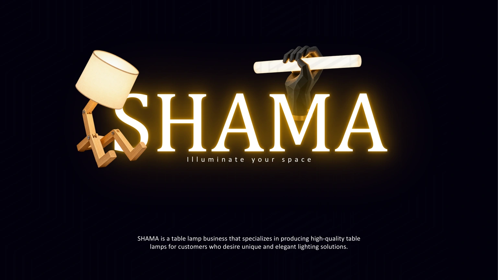
Shama began as a university project to turn everyday lighting into something playful and personal. Together, we developed the Humanoid and Handie lamps, bringing character into functional objects through adjustable wooden forms and sculptural hand designs. I develop the idea by asking: How can we make this from scratch? Would it be useful? What else could it do? I wanted the lamps to offer more than light. We explored adjustable poses, a book-support function, and different ways to position the lamps for reading, working, and decorating a space. I sourced raw materials, found vendors, compared prices, and helped make the lamps. I also worked on budgeting, balancing our creative ideas with material costs and practical construction choices. THE BEGINNING MORE THAN A LAMP BUILDING FROM SCRATCH
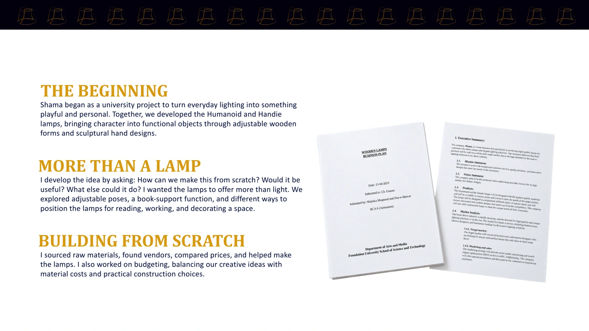
CREATING THE BRAND EXPERIENCE I designed Shama’s branding, packaging, business cards, posters, catalog, and order receipts. I also created a website where clients could explore the products and connect with the business.
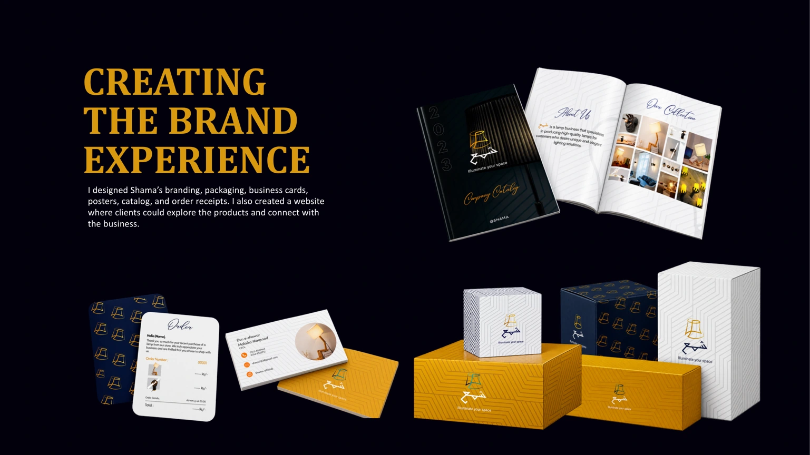
TAKING SHAMA TO THE STALL For a business event, I helped arrange the stall, product displays, and promotional materials, bringing our lamps and visual identity together for visitors to experience in person.
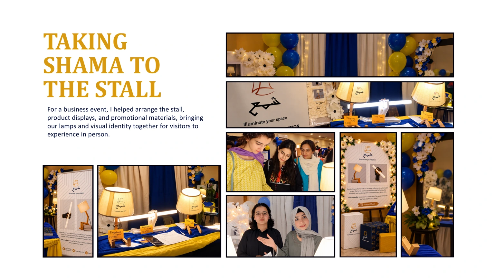
THE WEBSITE
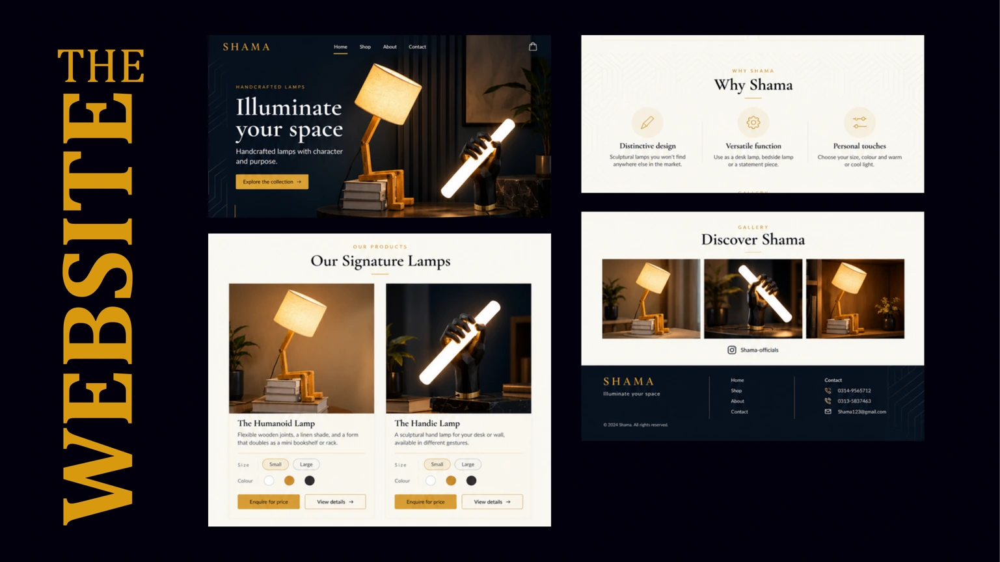
Project overview
From Instagram DMs to a Digital Storefront
Shama is a handcrafted lamp studio selling two signature pieces — the sculptural Handie Lamp and the posable Humanoid Lamp — entirely through Instagram direct messages in Rawalpindi and Islamabad.
As the UI/UX, Branding & Product Designer, I led the design of an experience that could carry the brand’s artisanal identity online, from low-fidelity wireframes through a finished visual design, with the product customizer as the centerpiece.
- Role
- UI/UX, Branding & Product Designer
- Tools
- Figma, Illustrator, MS Office, Canva
- Timeline
- 6 Weeks · University Term
- Platform
- Responsive Website
Deliverables
- Product design: Humanoid and Handie lamps
- Brand identity: Logo, colours, and typography
- UI/UX design: Client-facing product website
- Packaging: Branded lamp boxes
- Print materials: Business cards, posters, catalog, order receipts, boxes, packaging materials and standee
- Business planning: Material sourcing, vendor coordination, and budgeting
- Event stall: Product display and complete stall setup
GOALS & OBJECTIVES What the Website Needed to Do 01 Showcase the Craft Give each lamp room to breathe with large, considered product photography instead of a cramped Instagram grid. 02 Simplify Customization Turn a back-and-forth DM negotiation over size, colour and light into a clear, visual, on-page choice. 03 Build Online Trust Bring the brand's navy-and-gold identity to a proper storefront so it reads as a considered small business, not a side hustle. 04 Stay True to Scope Keep checkout simple and local — Rawalpindi and Islamabad delivery only — without over- building for a national launch.
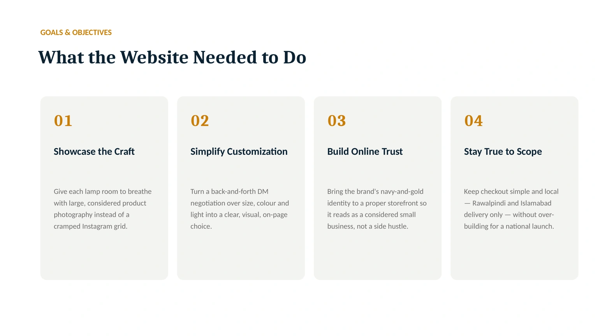
TARGET AUDIENCE Who Shama Designs For Ages 15–30 · Rawalpindi & Islamabad 1 Homeowners Decorating living spaces with a statement piece 2 Interior Designers Sourcing cohesive lighting for client projects 3 Hotels & Restaurants Warm, inviting ambience for guests 4 Retail Stores Unique décor & lighting to resell 5 Offices Functional lighting with personality
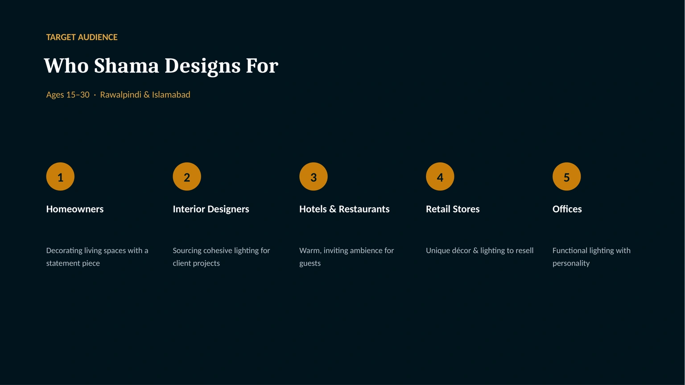
BRAND IDENTITY Navy, Gold & Craft COLOUR PALETTE Navy #0B2232 Gold #C97E0A Ink #1A1A1A White #FFFFFF BRAND PERSONALITY Artisanal Elegant Warm Considered Tagline: “Illuminate Your Space”
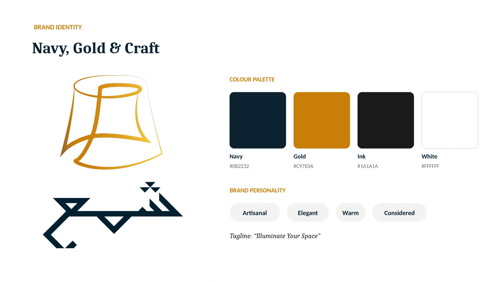
THE PRODUCTS Two Signature Lamps, Fully Customizable The Humanoid Lamp PKR 9,000 /- A posable wooden-jointed desk lamp with a linen shade — part light source, part sculpture, part mini bookshelf. 10" / 15" Natural / Black Incandescent / LED The Handie Lamp PKR 6,000 /- A sculptural hand cradling a light rod — mountable on a desk or wall, with gestures that add a classy, artistic accent. 6" / 10" White / Black Incandescent / Rod Light
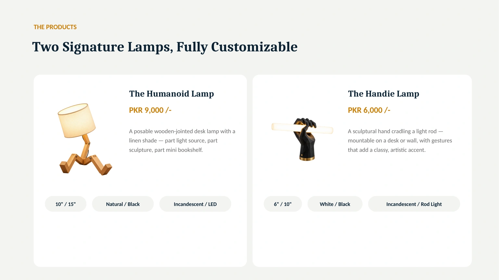
INFORMATION ARCHITECTURE A Simple, Familiar Shopping Flow Home Shop / Collection About Contact Product Detail + Customizer Cart / Checkout
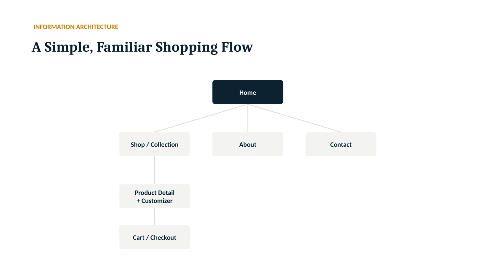
WIREFRAMES · LOW-FIDELITY Structuring the Homepage First Before any visual styling, I mapped the homepage in grayscale: a hero introduction, the two signature lamps side by side, the brand's value props, and a social proof section linking back to Instagram — the channel Shama's customers already trust. shama.pk
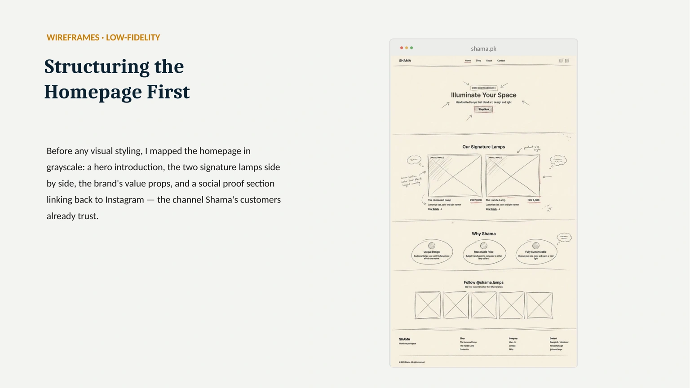
WIREFRAMES · LOW-FIDELITY The Product Page & the Customizer This is the page that replaces the Instagram DM. Size, colour and light-warmth are laid out as clear, tappable choices next to the product photo — with an accordion below for materials and shipping, and related products to keep browsing going. shama.pk/product/humanoid-lamp
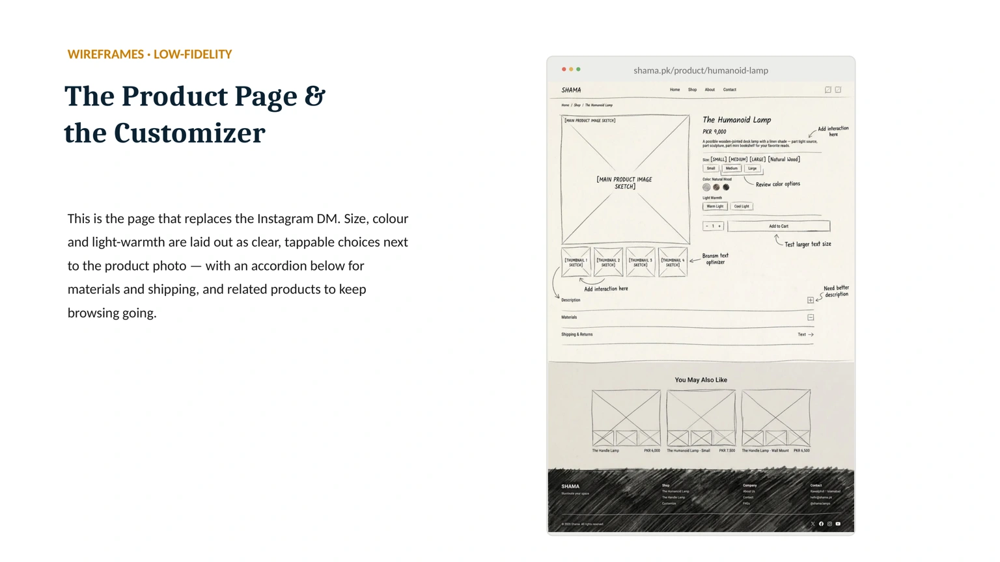
WIREFRAMES · MOBILE Designed Mobile-First for Instagram Traffic Most Shama customers arrive from an Instagram bio link — the mobile layout carries the same structure in a single stacked column.
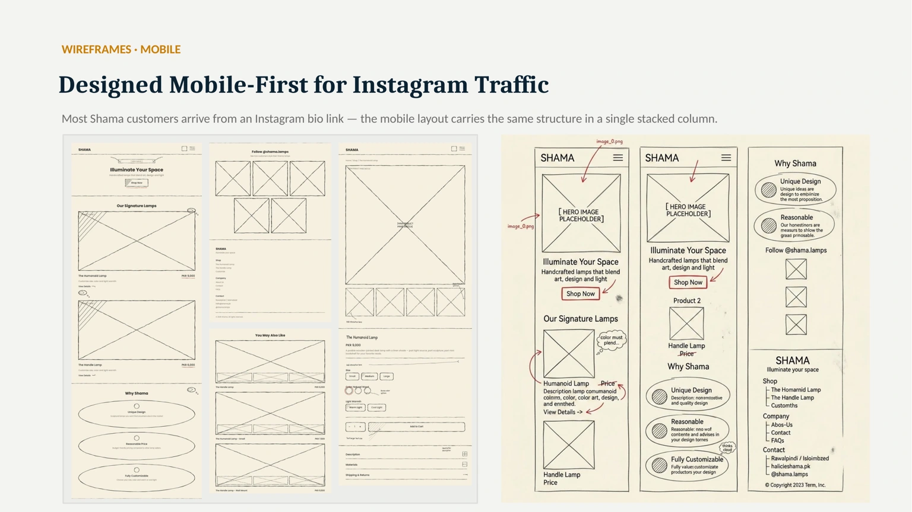
A FINAL UI DESIGN From Grayscale to a Living Brand The high-fidelity homepage carries the same structure as the wireframe, now dressed in warm cream, navy and gold — with real lifestyle photography of both lamps in place of grey boxes, and an Instagram strip that mirrors the brand's actual social presence. shama.pk
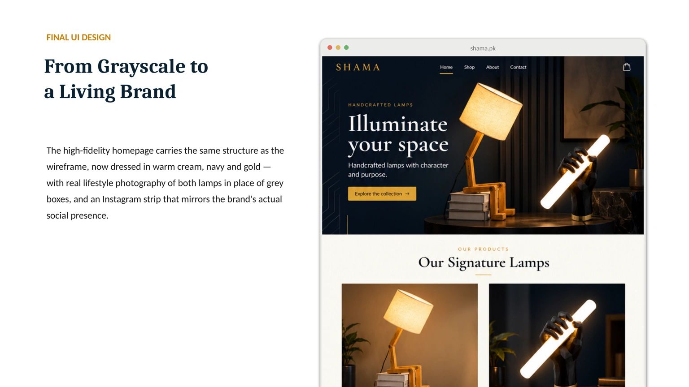
A FINAL UI DESIGN The Customizer, Finished Size, colour and light warmth are now real pill buttons and swatches in the brand's navy and gold, with the gold “Add to Cart” button reserved for this one moment — the site's single clearest call to action. shama.pk/product/humanoid-lamp
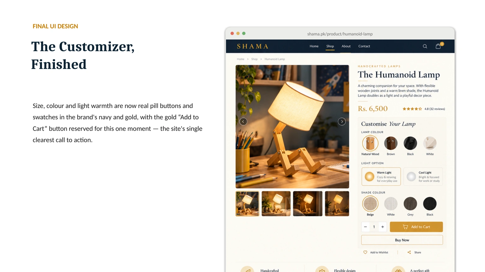
KEY FEATURE Designing the Customizer The single most important screen element — replacing a DM negotiation with three clear, visual choices. • Size Two sizes per lamp, shown as simple pill buttons — 6"/10" for the Handie Lamp, 10"/15" for the Humanoid Lamp. • Colour Circular swatches with a visible selection ring, matching the real material finishes — natural wood, walnut and black. • Light Warmth A warm/cool toggle so customers can picture the lamp in their own space before ordering.
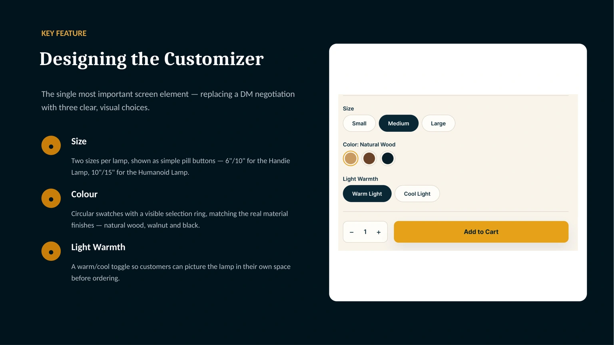
VISUAL SYSTEM A Small, Consistent Component Set TYPE SCALE Illuminate Your Space Section Heading Body copy sets in Calibri for clean, reliable reading at small sizes. BUTTONS Add to Cart View Details SPACING 8px base unit · 24px card padding · 64px section margins COMPONENT PALETTE Navy Gold Ink Light Grey CUSTOMIZER SWATCH Selection state shown with a navy ring, never colour alone.
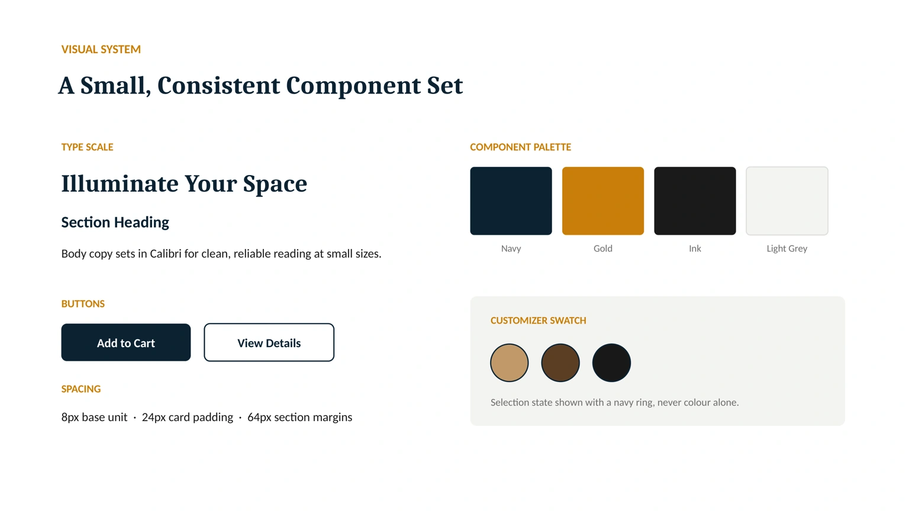
REFLECTION What I Learned The Challenge Translating a hands-on, conversational sales process into a static page without losing the feeling of a custom-made product. The Insight Customization sells the craft. Once size, colour and light warmth had a real interface, the product itself became the pitch — no sales copy needed. Next Steps User-test the customizer with real customers, then extend the same component pattern to a full checkout and order-tracking flow.
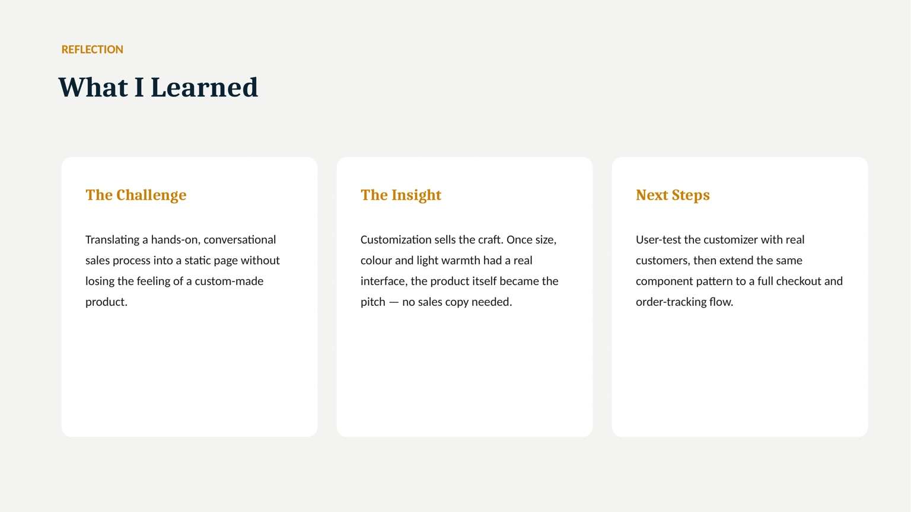
Thank You Let's talk about the next lamp — or the next project. Malaika Maqsood · UI/UX Designer shamaofficials123@gmail.com | @shamaofficials
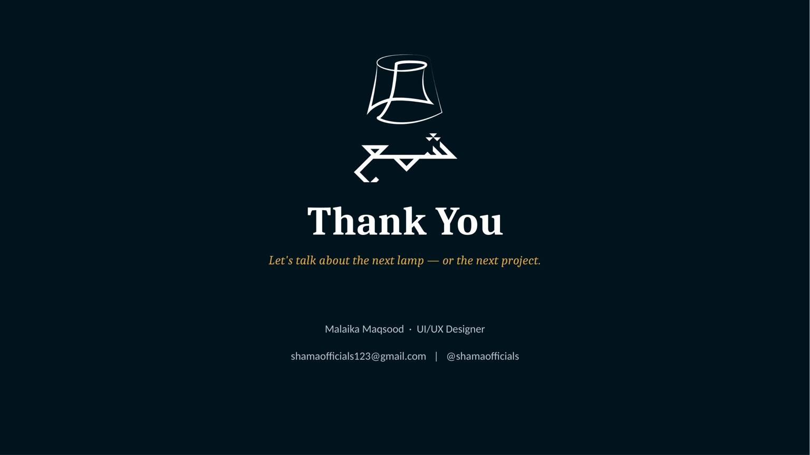